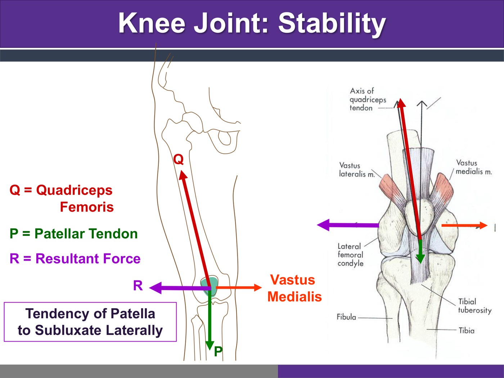
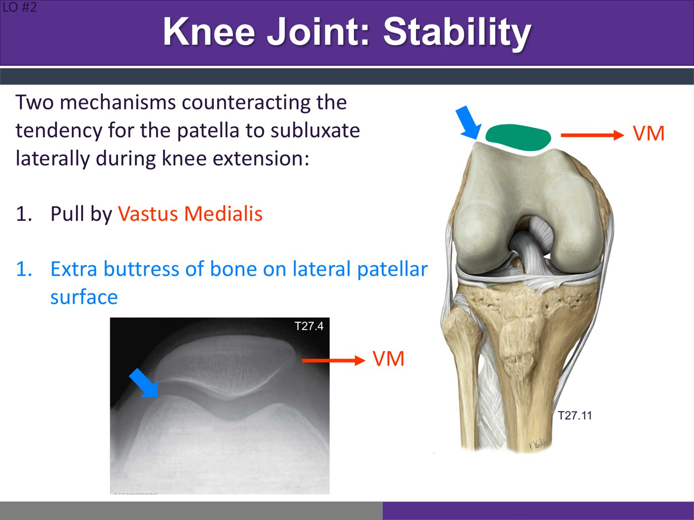
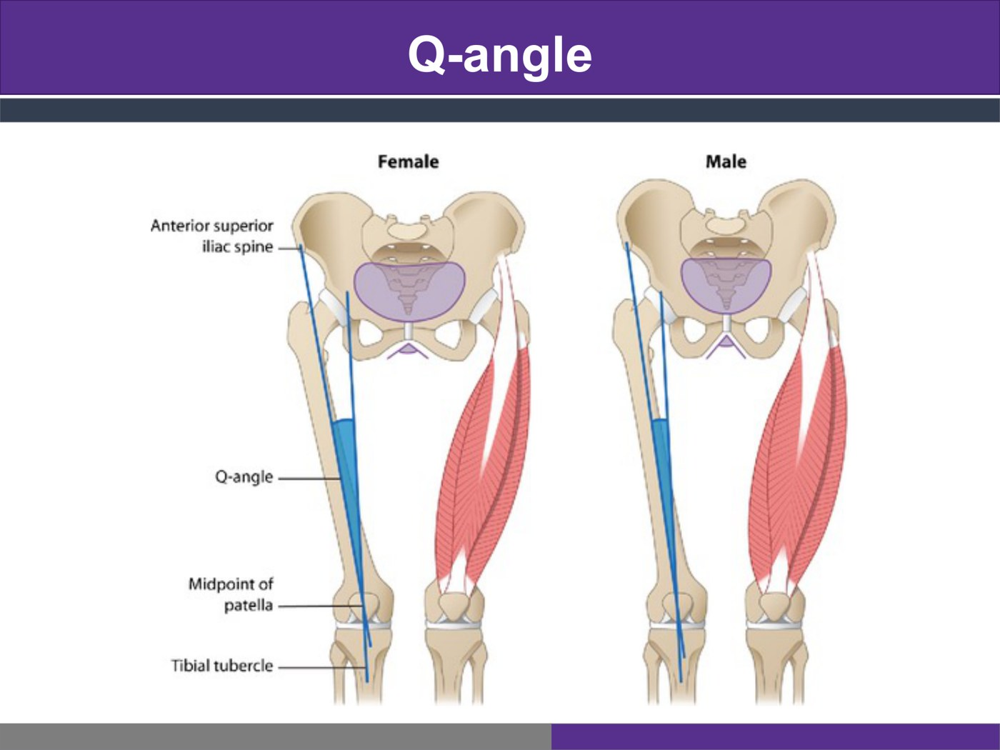
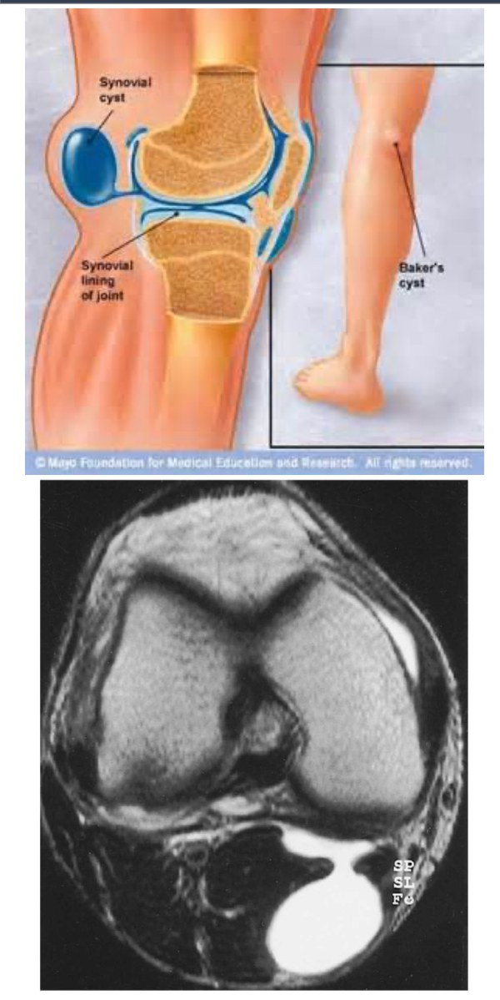
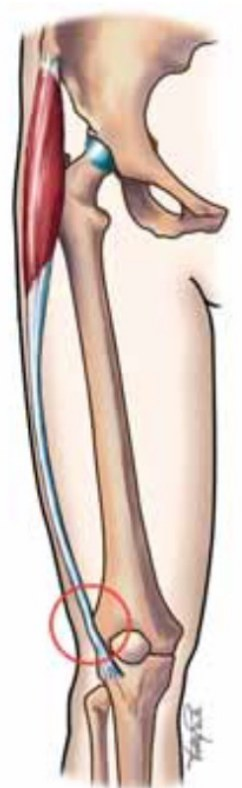

Clinical Approach to the Knee, Part 2
- Because of the Q-angle, the quadriceps pull the patella laterally. Only vastus medialis pulls it medially, helped by the raised lateral lip of bone on the femur's patellar surface. Women have bigger Q-angles because their hips are wider.
- Patellofemoral pain syndrome (PFPS) is very common (a 30% lifetime prevalence), especially in young women. Picture gradual onset after a new running habit, then a deep aching anterior pain on stairs, activity and prolonged sitting, with no swelling. It's a clinical diagnosis that needs no imaging. Treat with activity modification and vastus medialis strengthening; bracing and taping only accommodate, and surgery doesn't help.
- Knee bursitis comes from friction and gives mild swelling and tenderness over the bursa. Treat with PRICE and NSAIDs, but don't miss septic bursitis or an injury. The Baker's cyst is knee fluid pushed into the popliteal fossa through a capsule defect, usually from an intra-articular problem. Confirm it on ultrasound, which also helps exclude DVT, aneurysm and tumour. Give it 6 weeks of conservative care unless there's neurovascular compromise, and treat the knee, not just the cyst.
- IT band friction syndrome: lateral knee pain on running, worse downhill, with a positive Ober's test. Treat with stretching, PRICE and a graded return.
- Knee injections: corticosteroid is fast and cheap but lasts 4–12 weeks and may harm cartilage with repeated use. Hyaluronic acid lasts 26+ weeks and is safe but costs $300–500. PRP and stem cells aren't testable. Injections only settle pain so active physio can do the real work.
- The approach: after trauma, swelling within 6 hours means an ACL tear, fracture, patellar dislocation or large chondral injury. Swelling after 6 hours means a meniscus, PCL, high-grade MCL injury or an OA flare. With no swelling, or no trauma, sort by location. Always check the hip and think of radiculopathy and red flags.
Learning Objectives
- Explain the forces on the patella and what keeps it from subluxing laterally.
- Diagnose and manage PFPS, knee bursitis, a Baker's cyst and IT band friction syndrome.
- Compare the knee injection therapies and their evidence.
- Build a differential for traumatic and non-traumatic knee pain from the timing of swelling and the location of pain.
Dr. Charys Martin covers the anatomy of anterior knee pain (4 minutes). Dr. Jordan VanderEnde covers PFPS (3), miscellaneous knee pathology (6), knee injection therapies (9) and the clinical approach to the knee (6). About 30 minutes of recordings in all. It follows Part 1 and, with the Leg, is prep for next week's Knee, Leg, Ankle & Foot lab.
Anterior Knee Pain: the Anatomy
Dr. Martin's recording.
Keeping the Patella on Track
The knee has little bony stability, so it leans heavily on dynamic support from the surrounding muscles. The most important is the quadriceps, which forms the anterior capsule and carries the patella in its tendon. Several forces act on the patella. The patellar tendon pulls it down toward the tibial tuberosity. The quadriceps tendon pulls it up, but along the line of the femur, which slants, not straight up and down. The angle between those two lines of pull is the Q-angle, and their resultant pulls the patella laterally, so it tends to sublux laterally. The IT band and the rest of the quadriceps all pull laterally too; only vastus medialis pulls medially.
| Q-angle | The angle between a line from the ASIS to the middle of the patella and a line from the patella to the tibial tuberosity. It's greater in females: wider hips set the femur, and so the quadriceps' line of pull, further out. |
| Genu valgum (knock-knees; notes) | The femur sits at a sharper angle: a bigger Q-angle and more weight through the lateral condyles |
| Genu varum (bow legs; notes) | The femur is more vertical: a smaller Q-angle and more weight through the medial condyles |
(1) The pull of vastus medialis, which keeps the patella centred in the groove between the femoral condyles. (2) An extra buttress of bone: the lateral side of the femur's patellar surface (the lateral femoral condyle) stands higher than the medial. If the lateral pull is strong enough to override them, the patella keeps rubbing against that buttress. That extra contact is patellofemoral pain syndrome, with wear on the lateral patellar facet and the lateral patellar surface of the femur.

Q, P and the lateral resultant R. Slide from the deck.
Vastus medialis and the lateral buttress. Slide from the deck.
A wider pelvis, a bigger Q-angle. Slide from the deck.Patellofemoral Pain Syndrome
Dr. VanderEnde's recording.
Patellofemoral Pain Syndrome (PFPS)
Knee case 3: anterior knee pain
An 18-year-old woman has 3 months of worsening anterior knee pain in both knees. There was no injury, but she recently started running. At first it hurt only with exercise; now it hurts with prolonged sitting and on stairs. There's no swelling, and she describes a deep anterior aching pain. → a fairly classic PFPS.
| PFPS | |
|---|---|
| What | A clinical syndrome of anterior knee pain during or after repetitive loading of the extensor mechanism. The lateral pull drags the patellar facets against the lateral femoral condyle, which irritates it. |
| Risk factors | Females, adolescents; an increased tibiofemoral angle and Q-angle. Less common in males, whose shallower Q-angle pulls less laterally. |
| Presentation | Very common (a 30% lifetime prevalence). Usually a gradual onset from biomechanical overload: a new hobby, or more running or anything else that loads knee flexion and extension. It can also follow trauma (a patellar contusion). The pain is anterior and aching, worse after activity and with prolonged sitting. There's no joint swelling and no radicular component: the pain stays around the knee. |
| Evaluation | A clinical diagnosis from the history and exam; no imaging is needed. X-rays or an MRI are sometimes ordered to rule out other problems if it isn't responding to treatment. |
| Treatment | Activity modification: dial back whatever provokes it. Physio, mainly strengthening vastus medialis (terminal extension exercises) to balance vastus lateralis and correct the dynamic misalignment. Bracing or taping can help the pain but is accommodative: it corrects nothing. Then a graduated return to play once the pain has settled. |
Knowledge check
Which treatments could be offered for PFPS? (Select all.) → knee bracing, activity modification and strengthening vastus medialis. Not "taping the patella to prevent medial translation in flexion": the problem is lateral translation, and tape that prevents lateral translation would help. Not arthroscopy or arthroplasty: knee surgery hasn't been shown to improve PFPS.
Miscellaneous Knee Pathology
Bursitis, the Baker's cyst and IT band friction syndrome.
Knee Bursitis
Bursae protect the tendons crossing the knee from rubbing on bone, and the knee has many of them. Bursitis is irritation or swelling of a bursa, usually from chronic friction. It's a clinical diagnosis: mild swelling and tenderness over the bursa, developing slowly. Treat with PRICE and perhaps a short course of NSAIDs.
| Bursa | Where (notes) | Bursitis |
|---|---|---|
| Prepatellar | Superficial to the patella; lets the skin move freely over it | Housemaid's knee: friction between the skin and the patella, in people who move around and work on their knees |
| Infrapatellar (superficial and deep) | Superficial and deep to the patellar ligament | Clergyman's knee (the superficial one): friction between the skin and the tibial tuberosity, in people who kneel upright on hard surfaces for long periods |
| Suprapatellar | Deep to the quadriceps tendon; attached to the synovial membrane and to a small muscle, articularis genu, which pulls it tight in extension so the tendon and patella glide over the femur | One of the three that most often swell |

Septic bursitis: significant redness and heat, or systemic symptoms that suggest infection. Trauma: if there was an injury, look for the associated injuries. A slow, gradual onset of mild swelling and tenderness over the bursa points to plain bursitis.
Popliteal (Baker's) Cyst
A cystic extension of the synovial cavity (or the gastrocnemius–semimembranosus bursa) into the popliteal fossa through a defect in the posterior capsule. It's a pouch of fluid connected to the knee joint. It rarely arises on its own: another knee problem raises the synovial fluid, and the swelling escapes backward through the defect.
| Baker's cyst | |
|---|---|
| Presentation (adults) | An uncomfortable swelling in the popliteal fossa. It may limit flexion, since it takes up space, and it can grow large enough to reach the mid-calf. |
| Investigations | Ultrasound confirms the cyst and helps rule out the differential. An x-ray looks for other orthopedic injuries. MRI if it isn't improving, because ultrasound is imperfect at excluding a soft-tissue tumour and can't see inside the joint. |
| Differential | Popliteal artery aneurysm, a soft-tissue tumour, DVT, a meniscal cyst |
| Treatment | Conservative for the first 6 weeks, unless there's vascular or neural compromise: the popliteal artery and the tibial and common fibular nerves run right there. Compromise means investigating and managing sooner, possibly surgically. Conservative care is PRICE and NSAIDs, which is usually enough. If the knee is painful and swollen, an intra-articular corticosteroid injection helps: settle the joint and you settle the cyst. |
| Not settling at 6 weeks | MRI and surgical referral. The surgeon treats the intra-articular cause. Simply removing the cyst rarely works: the posterior capsule is hard to repair perfectly, so the cyst comes back with the next swelling. |

IT Band Friction Syndrome
It's covered with the hip, but it presents as knee pain because the IT band inserts on the lateral knee. The IT band rubs over the lateral femoral epicondyle during stance phase; the friction happens below 30° of knee flexion.
| Mechanism | Running, especially excessive downhill running; friction is less likely with sprinting |
| Presentation | An aching lateral knee pain during running, gradually getting worse |
| Treatment | Stretch the IT band, PRICE and a graduated return to exercise |

Knowledge check
Which findings fit IT band friction syndrome? (Select all.) → pain at the insertion of the IT band, a positive Ober's test, and lateral knee pain that gets worse with running. It's worse running downhill, not with sprinting or running uphill. A positive McMurray's sign is a meniscal finding. The IT band is extra-articular, so there's no effusion. Pain on valgus stress points to the MCL, not the IT band.
Also on the medial side, just below the knee: pes anserine bursitis, under the insertions of sartorius, gracilis and semitendinosus. It's covered in the approach below.
Knee Injection Therapies
The module says corticosteroid and hyaluronic acid injections are need to know and testable. PRP and stem cell injections are nice to know and not testable.
Corticosteroid, Hyaluronic Acid, PRP, Stem Cells
| Injection | What it is | Benefits | Limitations |
|---|---|---|---|
| Corticosteroid ("steroid", "cortisone") | Local delivery of a potent anti-inflammatory, for joint, bursa and tendon disorders | Rapid onset; inexpensive (under $20) | Short-acting (4–12 weeks). There's weak evidence of chondrotoxicity and OA progression when injected into the joint (a 2017 JAMA trial of triamcinolone vs saline). It probably builds up with repeated injections, and no one knows how many is too many. So not every 3 months for a 20-year-old, but much less worry at 85. |
| Hyaluronic acid | Found naturally in synovial fluid; FDA-approved for intra-articular use in 2001. Replacing it theoretically restores viscoelasticity, so better shock absorption and lubrication. | Lasts longer: more than 26 weeks. A good safety profile, without the chondrotoxicity concern. | Expensive ($300–500); heterogeneous studies. Overall, no better than corticosteroid for pain or function. |
| Platelet-rich plasma (PRP; not testable) | The patient's own blood (20–60 mL), centrifuged or filtered down to 3–10 mL with supraphysiologic platelets and growth factors, then injected into a joint, tendon, ligament or muscle | Might improve repair or regeneration of tissue; this hasn't been seen | Very expensive ($500–1,500), paid by the patient, since it isn't OHIP-covered. Studies carry a high risk of bias (it's a money-maker) and preparation isn't standardized. A 2014 Cochrane review of 19 RCTs (1,088 patients) in soft-tissue injuries and as a surgical adjunct found no clinically significant improvement over placebo. The 2010 IOC consensus said firm recommendations can't be given. |
| Mesenchymal stem cells (not testable) | Claimed to regenerate articular cartilage, which hasn't been shown | Not shown to be better than other injections | Very limited human studies; $3,000–10,000. In May 2019 Health Canada said stem cell therapies are drugs that need formal approval after rigorous review. Dr. VanderEnde actively counsels patients against them. |
Dr. VanderEnde starts with corticosteroid, because it's covered and inexpensive, and he talks through the possible toxicity with patients. In meta-analyses the pain and function outcomes are about the same for corticosteroid, hyaluronic acid and PRP. No injection is the whole treatment, and none of them removes the arthritis. Take knee OA: the aim is to optimize conservative care to delay surgery as long as possible, and the mainstay is physio. Strong quadriceps and hamstrings make the knee more stable and less irritable, so it flares less. An injection settles the pain so the patient can do that active work. When the injections stop working and the pain is heavy, the patient is moving toward replacement. At that point, a patient who can afford hyaluronic acid or PRP and wants to delay surgery can try them, but the benefit is usually no better. Famous athletes having PRP (Tiger Woods, Alex Rodriguez, Kobe Bryant) is anecdote, not evidence.
Knowledge check
Which injection therapies are approved and have been shown to improve pain or function in early knee OA? (Select all.) → the key marks corticosteroid, hyaluronic acid and PRP. Not intra-articular morphine, which hasn't been shown to help and wasn't covered. Not mesenchymal stem cells, which aren't approved in Canada for orthopedic use.
The Clinical Approach to the Knee
History, then traumatic and non-traumatic pain.
History
| Ask about | Details |
|---|---|
| Symptoms | Pain and its quality (aching, burning, throbbing, stabbing). Inflammatory signs (swelling, stiffness, redness, warmth). Always ask about neurologic symptoms (tingling, shooting pain, numbness, heaviness of the leg when walking or standing). |
| Function | Structural: instability, catching, giving way, locking. Does it lock in one position, or have they lost range because it locks out? Pain or neurologic: weakness, limping, trouble walking. |
| Provoking factors | Weight bearing (walking, standing, running), uphill or downhill, stairs (up or down), sitting, inactivity |
Traumatic Knee Pain: When Did It Swell?
| After trauma | Think of |
|---|---|
| Swelling within 6 hours | ACL tear (especially with the plant, pivot, pop and immediate swelling), fractures (any trauma big enough: don't miss them), patellar dislocation, large chondral injuries |
| Swelling after 6 hours | An OA flare, meniscal injuries, a PCL injury, an MCL sprain (high grade). MCL injuries rarely swell much, so an MCL injury that swells is usually a higher grade, toward a complete tear. |
| No swelling: anterior | A PFPS flare; prepatellar or infrapatellar bursitis |
| No swelling: posterior | A PCL injury; a gastrocnemius or hamstring strain; a popliteus strain |
| No swelling: medial | An MCL sprain; an OA flare; a hamstring strain |
| No swelling: lateral | IT band bursitis; an OA flare; a biceps femoris injury; a superior tibiofibular joint injury |
| No swelling: diffuse | Pain that can't be pinned to one region |
Non-Traumatic Knee Pain: Where Is It?
| Location | Differential |
|---|---|
| Anterior | PFPS; patellar tendinopathy, focal over the patellar tendon; quadriceps tendinopathy, a bit more proximal; infrapatellar and prepatellar bursitis; apophysitis, in children, at the growth plates; a stress fracture of the patella; referred pain from the hip; neoplasm |
| Posterior | A PCL injury; popliteus tendinopathy; gastrocnemius tendinopathy; a Baker's cyst; biceps femoris tendinopathy; DVT; neoplasm; referred pain from the hip; radiculopathy |
| Medial | A medial meniscal injury; medial knee OA; pes anserine bursitis; MCL injuries; referred pain from the hip; radiculopathy |
| Lateral | IT band friction syndrome; biceps femoris tendinopathy; a lateral meniscal injury; a peroneal nerve injury; lateral knee OA; referred pain from the hip; radiculopathy; neoplasm; superior tibiofibular joint pathology |
Sartorius, gracilis and semitendinosus attach to the tibia just below the knee (see Dr. Martin's anatomy lectures). Bursitis under that insertion isn't knee joint pain and is managed differently. Physio should strengthen the pes anserinus muscles. If an injection is needed, it goes into the bursa: a knee joint injection won't help. So on exam, check whether the tenderness is over the pes anserinus or over the joint line.
Localize the pain, then list the anatomic structures in that region (Dr. Martin's lectures). Any muscle there can give a tendinopathy, which you treat with the MSK basics. Referred pain from the hip can turn up anywhere in the knee, so examine the joint above and below. Look for radicular symptoms (pain, numbness, tingling), which will make more sense after the neurology unit. Watch for neoplasm red flags: deep night bone pain, unintentional weight loss, unexplained fevers, chills, night sweats, or a history of cancer. When knee pain doesn't respond to conservative care as expected, get advanced imaging so you don't miss one.
Knowledge check: the emergency department
A 23-year-old soccer player pivots to avoid a defender, feels a "pop" and his left knee gives way. He came off and didn't return to play. It swelled, but he isn't sure when, and he can't bear weight. He's otherwise healthy. Which diagnoses are possible? (Select all.)
| Diagnosis | In the list? | The module's feedback |
|---|---|---|
| Acute meniscal tear | Yes | Twisting injuries: a flexed knee rotated on a planted foot. Chronic degenerative tears happen in older people with minimal twisting. |
| ACL injury | Yes | The most commonly injured knee ligament. About 70% are non-contact: sudden deceleration, a change of direction, or pivoting or landing with rotation and valgus collapse. Contact injuries come from a blow causing hyperextension or valgus. |
| Knee (tibiofemoral) dislocation with multi-ligament injury | Yes | Infrequent but limb-threatening, from high-energy trauma such as a car crash. It's a surgical emergency: reduce immediately, then do a careful neurovascular assessment. It can be missed if the knee reduces on its own, because the x-rays may look normal. |
| Patellar dislocation | Yes | Usually lateral. The foot is planted and a rotatory force hits the flexed knee in valgus (twirling in dance, swinging a bat), or a blow lands on the medial knee. |
| PCL tear | Yes | Most occur with multi-ligament injuries after high-energy trauma, classically the dashboard injury. In athletes: a fall onto a flexed knee with the foot plantarflexed, or a blow to the front of the knee. |
| Tibial plateau fracture | Yes | From direct trauma, hyperextension in a collision, or twisting in elderly or osteoporotic people. A tibial fracture is the injury most often associated with acute compartment syndrome. |
| MCL sprain; LCL sprain | No | The MCL goes with a valgus blow to the outside of the knee, or abduction or rotation of the lower leg (a shoe catching). An isolated LCL sprain is among the least common knee injuries, from a varus blow, and usually comes with posterolateral corner and multi-ligament injuries. |
| Femoral shaft fracture | No | High energy, with extensive bleeding and possible shock. 20–50% also injure the ipsilateral knee (cruciate or meniscal tears). |
| Patellar tendon rupture | No | A sudden, strong quadriceps contraction (landing a high jump, a fast change of direction). Weakened collagen raises the risk: lupus, rheumatoid arthritis, diabetes, tendinopathy, prior injury, steroid injections, fluoroquinolones. |
| Crystal or inflammatory arthropathy; osteoarthritis | No | Pseudogout or gout cause severe pain, redness and swelling. Inflammatory arthritis usually comes with a systemic condition. OA affects middle-aged and older people, with pain, stiffness and reduced mobility building up over time. None of them fits an acute pivot with a pop. |
Built from Drs. Charys Martin and Jordan VanderEnde's “Clinical Approach to the Knee: Part Two” module: the five recordings (anterior knee pain anatomy; PFPS; miscellaneous knee pathology; knee injection therapies; the clinical approach), the knowledge checks and their feedback, the 27-slide detailed deck and Dr. Martin's knee notes. Left out: the case photos, the injection photos, the athletes' photos and the news clippings. Notes: the module calls PRP “nice to know and not testable”, yet the injection knowledge check's key counts PRP as approved and effective in early knee OA. The IT band knowledge check's feedback says valgus stress testing “checks the LCL”: valgus stress tests the MCL, and varus stress the LCL. The IT band slide and the knowledge check say the band rubs on the lateral epicondyle; the recording says the lateral condyle. The recording describes the Q-angle with a vertical line through the patella; the notes and slide use the line from the patella to the tibial tuberosity. Caption corrections: subluxate (“sublingual subluxation”, “sublets”), vastus medialis (“vastus medius”, “vastus medially”), intercondylar fossa (“inter conjugal or fossa”), patellofemoral (“patella femoral”), anterior (“enter your”), ASIS (“axis”), lateral femoral condyle (“ladder of member condyle”), terminal extension (“terminal X”), suprapatellar and infrapatellar (“super patellar”, “intra patellar”), synovial (“snow heel”, “Snow Vale”), popliteal cyst (“little physicist”), chondrotoxicity (“contra toxicity”), viscoelasticity (“risk of elasticity”), knee OA (“Neo”, “O.R.”), meta-analyses (“the size”), popliteus (“popular Tia”), gastrocnemius (“gastric”), chondral (“Condra”), apophysitis (“A PDF of situs”), pes anserine (“Pez, answering”, “peasant’s right”, “pads answering”), patellar tendinopathy (“patellar tendon apathy”) and radiculopathy (“ridicule apathy”).